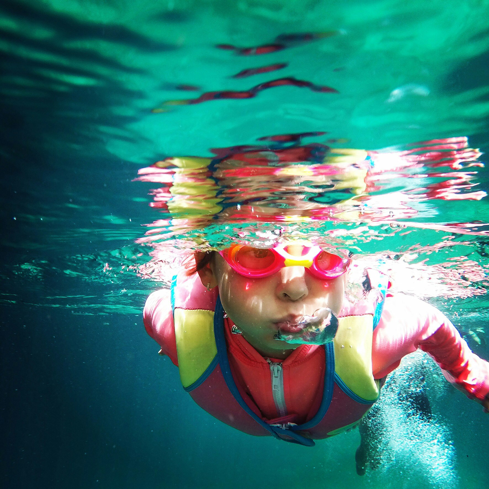

Why Physical Activity Matters
Physical activity is not just beneficial for maintaining physical health but also plays a crucial role in enhancing mental well-being. Engaging in regular exercise can lead to significant improvements in various aspects of mental health, from reducing stress to boosting self-esteem.
Find Your Activity

Swimming
Walking
Yoga

Running

Dancing
Success Stories
Benefits of Mental Health Through Physical Activity
Physical activity can boost mood and help you feel less angry or
frustrated. It can also help you develop a positive outlook on
life.
Physical activity can help you manage stress and reduce anxiety
and depression.
Physical activity can improve cognitive function and brain
connections. It can also help keep your memory sharp by growing
the hippocampus, the part of the brain responsible for learning
and memory.
Physical activity can help you sleep better, which can improve
your mental focus and self-control.
Physical activity can help boost your self-esteem and alleviate
symptoms like social withdrawal.